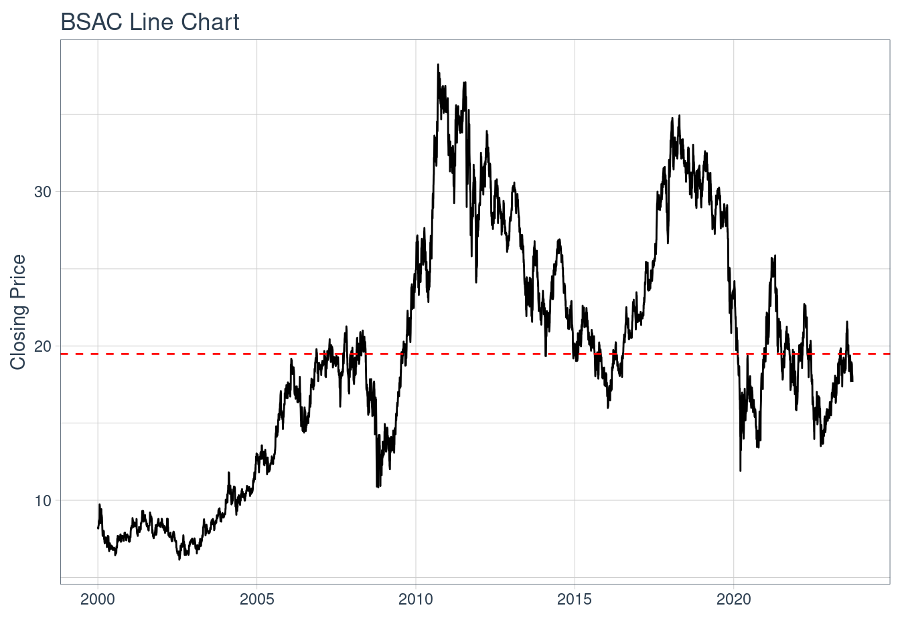
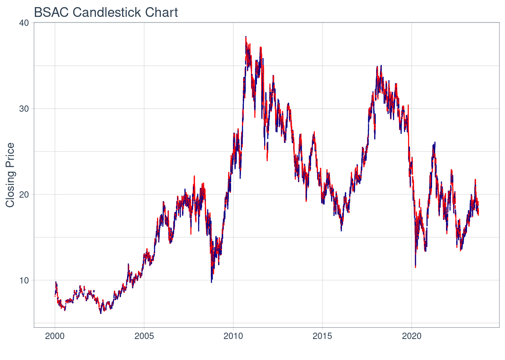
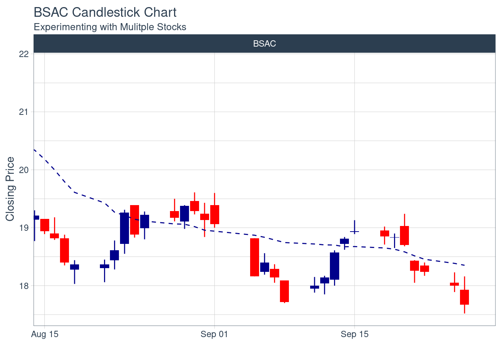
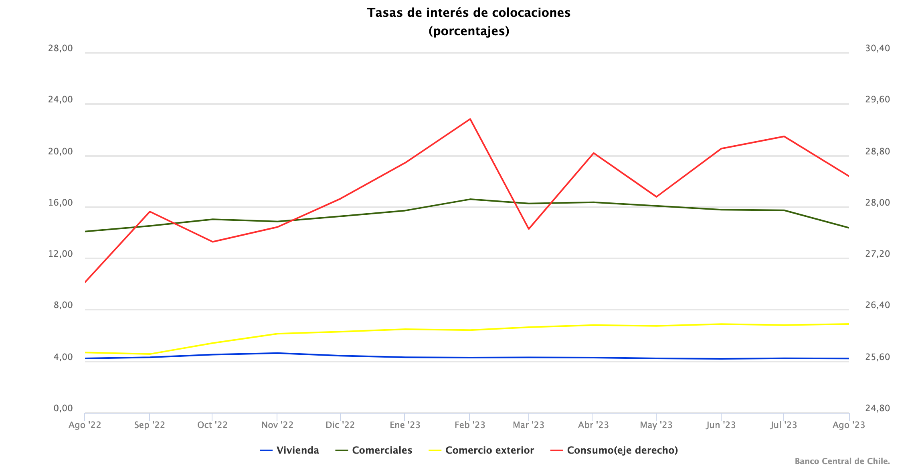

Proyecto Gestión Financiera
Descripción Activo y Contexto (Hito 1)
Fecha de entrega: Jueves 28 de Septiembre 23:59.
Definición
Banco Santander es una de los bancos más grandes del mundo, debido a su gran presencia en múltiples países. Este es un banco de origen español, que tiene sedes en Chile. Es por esto, que en el IPSA, se puede encontrar como “BSANTANDER”, que hace referencia a la empresa “BANCO SANTANDER CHILE”, y no solamente “BANCO SANTANDER”. En Chile, es el banco más grande del país. Este banco pertenece a la industria de la banca (industria financiera), cuyo sector ofrece servicios financieros, como por ejemplo ofrecer prestamos personales. En “Web of Science”, encontré un articulo sobre el efecto de bancos extranjeros en la “performance” o rendimiento de bancos, en paises en vías de desarrollo, el cual explicaré un poco mas a fondo en la sección de motivación. Lo interesante del paper es que analiza el efecto de bancos extranjeros en Chile.
El activo BSAC tiene un valor promedio para el intervalo igual a 19

Motivación
La razón por la que yo escogí Banco Santander, es porque este es el banco mas grande en Chile, siendo este de procedencia español. Además de esto, Banco Santander es uno de los bancos mas grandes del mundo, por lo que me interesa aprender sobre este, para ver las razones de su éxito. Sumado a esto, en la página de “Web of Science”, encontré un articulo sobre el efecto de bancos extranjeros en la “performance” o rendimiento de bancos, en paises en vías de desarrollo. Los resultados de una regresión, de datos obtenidos de los estados financieros indican que los bancos extranjeros mejoran la competitividad de la industria bancaria, reduciendo la volatilidad de los retornos, e incrementando el préstamo de consumo. La evidencia muestra que en la presencia de instituciones solidas, los bancos extranjeros mejoran el sector bancario en paises que están en vias de desarrollo. El paper especificamente analiza el caso de Chile, siendo este un paper de cuartil 1. Esto me motiva aprender de la industria bancaria, ya que tiene una gran repercusión en la sociedad.
Una de las cosas que mas me motiva de estudiar al Banco Santander, es que es considerado el único banco, que es parte de las empresas que están cambiando al mundo, debido a su innovación, educación, emprendimiento y empleabilidad.
Contexto
Los 3 activos que voy a estudiar son:
Precio de la acción del Banco Santander
Precio del dolar
Tasa de interés
El precio de la acción tiene relación con la industria bancaria y especialmente el Banco Santander, ya que en base al precio de este, se puede ver como le está yendo al banco y cual es la perspectiva que tiene la gente de este. A un mayor precio de acción (en comparación al promedio de la industria), se puede decir que la perspectiva que tiene la gente del banco es buena, ya que, el precio al ser los flujos futuros traídos a valor presente, indica que en un futuro creen que al banco le ira bien. Sumado a eso, la gran cantidad de inversiones que realiza el banco, al ser un banco internacional, implica que el banco se esta expandiendo y por ende, es un banco con una buena proyección, lo cual incrementa su precio de la acción.
El precio del dolar tiene relación con la industria bancaria, ya que este afecta directamente en la economía nacional. Sumado a eso, la mayoría de inversiones realizadas en el extranjero son en la divisa del dólar, por lo que dependiendo del rendimiento de este, se podrá obtener un mayor o menor retorno. Además, la mayoría de transacciones que realiza un banco son en la divisa del dolar, por lo que su precio afecta al monto de transacción. Sumado a eso, el Banco Santander es un banco internacional que esta en múltiples paises, por lo que ellos utilizan mucho el dólar para facilitar el movimiento de dinero, y es debido a esto que el precio de este activo les afecta.
La tasa de interés tiene relación con la industria bancaria, ya que esta afecta al interés que ofrece el banco a sus créditos, entre otras cosas. Sumado a eso, a mayor inflación, se va a tener una mayor tasa de interés, lo que va afectar en el consumo del consumidor, es decir, va a consumir menos y por ende utilizará un menor crédito de consumo, lo cual afectará negativamente al banco. Sin embargo, a una mayor tasa de interés, el banco genera una mayor cantidad de retornos, lo cual afecta positivamente al banco. Como el Banco Santander es parte de la industria bancaria, la tasa de interés les afecta.

Ejemplos:
Precio de la acción para los últimos 6 meses:
%2021.37.27.png)
Precio del dólar para los últimos 3 meses:
%2021.33.29.png)
Tasa de interés para el último año:

Análisis de Largo Plazo
El Banco Santander Chile tiene un total de 188.446.126.794 acciones comunes, es decir, acciones que “no tienen preferencia especial ya sea en el pago de dividendos o en caso de quiebra” (Capítulo 15 RWJ). A mayor cantidad de acciones comunes que uno tenga, mayor será la participación, por ejemplo, en votaciones, y mayor parte del patrimonio uno va a tener. Banco Santander Chile utiliza la votación acumulativa, es decir que se escojen a todos los consejeros de una vez y permite la participación minoritaria.
Por el otro lado, las acciones preferentes, dan preferencia sobre el pago de dividendos y sobre la distribución de los activos en el caso de que la empresa los liquide. Sumado a eso, los tenedores de acciones preferentes no tienen derecho a votación. En el año 2020, Banco Santander realizó una inversión de 1.500.000.000 euros para la colocación de acciones preferentes. La cantidad de acciones preferentes que existen actualmente en la compañia fue un dato que no logré encontrar.
Por el lado de la deuda, la cantidad de deuda emitida que tiene Banco Santander Chile es de 7.636.954 MM dólares (estados de resultado junio 2023). Esto convierte a Banco Santander Chile en un deudor. Es importante saber que la deuda no es parte de la propiedad de la empresa, por lo que los acreedores no tienen derecho a votación. También, el pago de intereses sobre la deuda, se considera un costo de hacer negocios, por lo que es deducible de impuestos. La deuda sin pagar, es considerada un pasivo de la empresa. En el caso que no se pague, los acreedores pueden reclamar legalmente los activos de esta. En el año 2021, Banco Santander Chile fue el primero en emitir un bono perpetuo de US 700 millones. La tasa de este bono fue de 4,625% anual. Sumado a esto, es importante notar que el ranking crediticio que Standard and Poor´s tiene de Banco Santander Chile es de A-, el cual es un ranking bastante elevado, es decir que la probabilidad de que este banco no cumpla con sus obligaciones de pago, es baja. Finalmente, el 31 de julio de 2023, Banco Santander Chile emitió un bono titulizado, con un monto de colocación de 1.500.000 UF, una tasa de colocación de 2,44% y una tasa cupón de 3,20%. La moneda de colocación era UF y fue emitido por una duración de 15 años aproximadamente.
Ranking crediticio Banco Santander Chile (Standard and Poor´s):
%2013.22.10.png)
Bono titulizado emitido el 31 de julio:
%2013.33.05.png)
Caracterización de emisiones históricas
El Banco Santander Chile ha realizado dos emisiones de acciones, la primera el 8 de octubre del año 1996, emitiendo un total de 196.919.579 acciones. La segunda emisión de acciones fue realizada el 12 de agosto del año 1998, emitiendo un total de 72.904.230 acciones. Respecto al proceso de emisión y al paso a paso, no fue posible encontrar información.
Emisión de acciones del Banco Santander Chile:
%2020.58.05.png)
Relación con activos derivados
Un derivado relacionado con la industria bancaria y el Banco Santander Chile, es un forward de tipo de cambio. El forward de tipo de cambio, es un acuerdo entre dos partes (ej: el banco y un agricultor), en el que se obligan a cambiar en una fecha futura ya establecida, un monto determinado de una moneda por otra. Ej: Un agricultor y el banco, acuerdan cambiar en 1 año el dolar a 800 pesos, independiente de si el precio del dolar esta más arriba o más abajo del precio pactado (agricultor esta vendiendo dólares al banco). Si el precio del dólar a 1 año es superior a 800 pesos, entonces el agricultor sale perdiendo, ya que estaría obteniendo menos pesos por dólar que le entrega al banco, mientras que si el precio del dólar a 1 año es inferior a 800 pesos, entonces el agricultor sale ganando, ya que estaría obteniendo mas pesos por dólar intercambiado con el banco.
Este derivado es importante para el Banco Santander Chile, ya que le sirve para mitigar el riesgo de tipo de cambio. Es decir, que al definir un precio de tipo de cambio hoy, se están protegiendo contra los eventuales cambios en el precio del tipo de cambio, y así estabilizar los flujos de caja futuros.
Algunos derivados que tiene Banco Santander Chile al 30 de junio 2023:
%2021.27.41.png)
Gráfico de evolución derivado más tipo de cambio spot:
%2021.28.10.png)
Reporte grupal
Los pesos para el portafolio son:
50% banco (Banco Santander Chile)
35% energía (COPEC)
15% inmobiliaria (Parque Arauco)
Escogimos esta distribución ya que actualmente, con las altas tasas de interés, producto de la inflación, los bancos han generado un mayor retorno, lo cual incrementa el ingreso y por ende tienen más dinero para realizar inversiones, lo que puede provocar un aumento en su precio de acción. Sumado a esto, Banco Santander Chile ha realizado varias inversiones últimamente, como el aumento de cajeros automaticos. Es debido a esto que le otorgamos un 50% de peso al banco, ya que es la entidad que más retornos nos va a producir. Para poder diversificar el portafolio, le colocamos un 35% al sector de energía, ya que es un sector “neutro”, al cual no le ha ido bien ni mal, sin embargo es un sector de commodity, por lo cual es usado por toda la población y por ende, su aumento o disminución en el precio no es muy notable. Además de eso, Copec es una empresa que ha invertido en movilidad electrica, por lo que creemos que a largo plazo, este activo nos va a generar rentabilidad. Finalmente, otorgamos un 15% al sector inmobiliario, ya que actualmente es un sector que ha sido muy repercutido por la inflación y las altas tasas de interés, lo que produjo que su precio de acción disminuyera bastante. Creemos que esta tendencia seguirá, por lo que le otorgamos un menor peso en el portafolio. Por el otro lado, últimamente, Parque Arauco ha realizado inversiones en el extranjero, por lo que creemos que en un futuro, el precio de la acción va a incrementar, pero no en gran medida, debido a lo dañado que esta el sector de la inmobiliaria. Es debido a esto, que le otorgamos un peso “alto” a pesar de lo afectado que esta el área.